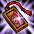
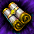
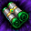
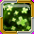
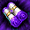
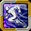
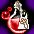

GW限定イベント2026
■開催期間
開催：2026年4月23日（木）メンテナンス後～5月21日（木）メンテナンス前。
狩りのBOXは毎週切り替わり、スペシャルミッションとWebルーレットは先に終了します。
| 内容 | 終了 |
|---|---|
| スペシャルミッション | 5月10日（日）23:59 |
| GW Red’sルーレット | 5月14日（木）10:00 |
| BOX・ログインチェック | 5月21日（木）メンテナンス前 |
■週替わりGW BOX
Lv301以上で参加。
Lv301～1999は自分のLv－100以上、Lv2000～2200はLv－50以上のモンスターが対象です。
週100個まで、毎週月曜0時にリセットします。
取引・銀行取引不可で、スティールでも獲得できます。
| アイテム名 | 獲得期限及び有効期間 |
|---|---|
| 2026年4月23日(木) 10:00 ～ 2026年4月30日(木) 09:59まで | |
| 2026年4月30日(木) 10:00 ～ 2026年5月7日(木) 09:59まで | |
| 2026年5月7日(木)10:00 ～ 2026年5月14日(木) 09:59まで | |
| 2026年5月14日(木)10:00 ～ 2026年5月21日(木) 09:59まで |
BOXは種類ごとの有効期間内に開けます。
インベントリに空きがないとフィールドへ落ち、「ロトボックス」と表示されます。
拾った後に実際のBOX名を確認できます。
【百】★3
| アイテム名 | 個数 | アイテム詳細 |
|---|---|---|
| 1 | アイテムをランダムで獲得するBox。 中身一覧（公式） |
【百】★2
| アイテム名 | 個数 | アイテム詳細 |
|---|---|---|
| 1 | ネフォンクリーチャーをランダムで召喚。 銀行取引不可。 | |
| 1 | 製錬失敗時の保護用。 1～10段階はLv低下なし、11～20段階はアイテム消滅なし。 銀行取引不可。 | |
| 1 | 古竜の魔石を1個生成。 高ランクを保証する品ではない。 銀行取引不可。 | |
| 1 | Lv2000未満のモンスター討伐経験値を80分間300%増加。 1時間の経験値＋200%バフを併せて適用。 他の果実と併用でき、同じサンベリー系とは重複しない。 イベント期間のみ使用可能。 銀行取引不可。 |
【百】★1
| アイテム名 | 個数 | アイテム詳細 |
|---|---|---|
| 1 | 錬成素材。 クリーチャー経験値の育成素材としても使用可能。 | |
| 1 | 2分間CPを最大値に維持。 同効果の重複使用不可。 | |
| 1 | 効果・使用条件 | |
 ジョン・マルコのお守り | 1 | 効果・使用条件 |
| 小型魔力インク瓶 | 1 | 効果・使用条件 |
| 1 | 指定した場所へ移動。 銀行取引不可。 | |
| 1 | 効果・使用条件 | |
| 1 | 効果・使用条件 |
【花】★3
| アイテム名 | 個数 | アイテム詳細 |
|---|---|---|
| 1 | アイテムをランダムで獲得するBox。 中身一覧（公式） |
【花】★2
| アイテム名 | 個数 | アイテム詳細 |
|---|---|---|
| 1 | 製錬失敗時の保護用。 1～10段階はLv低下なし、11～20段階はアイテム消滅なし。 銀行取引不可。 | |
| 1 | ミニペットを1体召喚。 契約期間30日。 銀行取引不可。 | |
| 1 | ネフォンクリーチャーをランダムで召喚。 銀行取引不可。 | |
| 1 | 古竜の魔石を1個生成。 高ランクを保証する品ではない。 銀行取引不可。 | |
| 1 | Lv2000未満のモンスター討伐経験値を80分間300%増加。 1時間の経験値＋200%バフを併せて適用。 他の果実と併用でき、同じサンベリー系とは重複しない。 イベント期間のみ使用可能。 銀行取引不可。 |
【花】★1
| アイテム名 | 個数 | アイテム詳細 |
|---|---|---|
| 1 | 錬成素材。 クリーチャー経験値の育成素材としても使用可能。 | |
| 1 | 2分間CPを最大値に維持。 同効果の重複使用不可。 | |
| 1 | 効果・使用条件 | |
| 小型魔力インク瓶 | 1 | 効果・使用条件 |
| 1 | 指定した場所へ移動。 銀行取引不可。 | |
| 1 | 効果・使用条件 | |
| 1 | 効果・使用条件 |
【爛】★3
| アイテム名 | 個数 | アイテム詳細 |
|---|---|---|
| 1 | アイテムをランダムで獲得するBox。 中身一覧（公式） |
【爛】★2
| アイテム名 | 個数 | アイテム詳細 |
|---|---|---|
| 1 | 製錬失敗時の保護用。 1～10段階はLv低下なし、11～20段階はアイテム消滅なし。 銀行取引不可。 | |
| 1 | ミニペットを1体召喚。 契約期間30日。 銀行取引不可。 | |
| 1 | ネフォンクリーチャーをランダムで召喚。 銀行取引不可。 | |
| 1 | Lv2000未満のモンスター討伐経験値を80分間300%増加。 1時間の経験値＋200%バフを併せて適用。 他の果実と併用でき、同じサンベリー系とは重複しない。 イベント期間のみ使用可能。 銀行取引不可。 |
【爛】★1
| アイテム名 | 個数 | アイテム詳細 |
|---|---|---|
| 1 | 錬成素材。 クリーチャー経験値の育成素材としても使用可能。 | |
| 1 | 2分間CPを最大値に維持。 同効果の重複使用不可。 | |
| 1 | 効果・使用条件 | |
| 小型魔力インク瓶 | 1 | 効果・使用条件 |
| 1 | 指定した場所へ移動。 銀行取引不可。 | |
| 1 | 効果・使用条件 | |
| 1 | 効果・使用条件 |
【漫】★3
| アイテム名 | 個数 | アイテム詳細 |
|---|---|---|
| 1 | アイテムをランダムで獲得するBox。 中身一覧（公式） | |
| 1 | アイテムをランダムで獲得するBox。 中身一覧（公式） | |
| 1 | アイテムをランダムで獲得するBox。 中身一覧（公式） |
【漫】★2
| アイテム名 | 個数 | アイテム詳細 |
|---|---|---|
| 1 | 製錬失敗時の保護用。 1～10段階はLv低下なし、11～20段階はアイテム消滅なし。 銀行取引不可。 | |
| 1 | ミニペットを1体召喚。 契約期間30日。 銀行取引不可。 | |
| 1 | ネフォンクリーチャーをランダムで召喚。 銀行取引不可。 | |
| 1 | Lv2000未満のモンスター討伐経験値を80分間300%増加。 1時間の経験値＋200%バフを併せて適用。 他の果実と併用でき、同じサンベリー系とは重複しない。 イベント期間のみ使用可能。 銀行取引不可。 |
【漫】★1
| アイテム名 | 個数 | アイテム詳細 |
|---|---|---|
| 1 | 錬成素材。 クリーチャー経験値の育成素材としても使用可能。 | |
| 1 | 2分間CPを最大値に維持。 同効果の重複使用不可。 | |
| 1 | 効果・使用条件 | |
| 小型魔力インク瓶 | 1 | 効果・使用条件 |
| 1 | 指定した場所へ移動。 銀行取引不可。 | |
| 1 | 効果・使用条件 | |
| 1 | 効果・使用条件 |
■全21日のログイン報酬
各日の報酬を受け取って次の日へ進めます。
受取先は、道具を使うキャラクターと銀行取引の可否を確認して選びましょう。
| 日数 | アイテム名 | 個数 | アイテム詳細 |
|---|---|---|---|
| 1日 | 20 | 冒険家協会の交換用コイン。 ※取引不可 | |
| 2日 | 1 | Lv1700～1999で、9時間分の経験値の1%を獲得。 銀行取引不可。 | |
| 3日 | 30 | 「終焉の森」関連の交換用コイン。 ※取引不可 | |
| 4日 | 5 | 装備の能力を強化する石。 | |
| 5日 | 1 | クリーチャー経験値の育成素材。 銀行取引不可。 | |
| 6日 | 1 | Lv2000未満のモンスター討伐経験値を80分間300%増加。 1時間の経験値＋200%バフを併せて適用。 他の果実と併用でき、同じサンベリー系とは重複しない。 イベント期間のみ使用可能。 銀行取引不可。 | |
| 7日 | 1 | 1個以上のオプションを解放したNxユニークに使用し、解放済みオプションをランダムに変換。 追加リング・補助武器・投擲爪・壊れた装備には使用不可。 銀行取引不可。 | |
| 8日 | 1 | クリーチャー経験値の育成素材。 | |
| 9日 | 20 | ディメンション・ハブで得られる装備強化素材。 ※取引不可 | |
| 10日 | ２ | 10分間CPを最大値に維持。 同効果の重複使用不可。 | |
| 11日 | 1 | クリーチャーのマナ100個分。 | |
| 12日 | 1 | クリーチャー経験値の育成素材。 銀行取引不可。 | |
| 13日 | 5 | 装備の能力を強化する石。 | |
| 14日 | 1 | 1個以上のオプションを解放したNxユニークに使用し、解放済みオプションをランダムに変換。 追加リング・補助武器・投擲爪・壊れた装備には使用不可。 銀行取引不可。 | |
| 15日 | 3 | 効果・使用条件 ※取引不可 | |
| 16日 | 30 | 「終焉の森」関連の交換用コイン。 ※取引不可 | |
| 17日 | ５ | 装備を製錬し、出現する称号の数を増やす。 銀行取引不可。 | |
| 18日 | 1 | ネフォンクリーチャーをランダムで召喚。 銀行取引不可。 | |
| 19日 | 3 | 10分間CPを最大値に維持。 同効果の重複使用不可。 | |
| 20日 | 1 | クリーチャーの餌と併用し獲得経験値を増加。 必要数は餌によって異なる。 ※取引不可 | |
| 21日 | 3 | ネフォンクリーチャーをランダムで召喚。 銀行取引不可。 |
■スペシャルミッション
4月23日～5月10日23:59に達成したアカウントから抽選します。
同じアカウント内の複数キャラクターの達成分は合算。
ログインはキャラクターを選んでゲームへ入る必要があります。
| ミッション | 当選人数 | 報酬 |
|---|---|---|
| ゲームログイン5日以上 | 200 | |
| 宝箱3回以上オープン | 200 | |
| 混沌の大地10回以上クリア | 200 | |
| デイリー討伐10回以上クリア | 200 | |
| ギルドデイリークエスト10回以上クリア | 200 | |
| 協会デイリークエスト10回以上クリア | 200 | |
| クリーチャー冒険10回以上クリア | 150 | |
| ユニークアイテム20個以上獲得 | 150 | |
| RED STONEのかけら50個以上獲得 | 150 | |
| ミニペット合成3回以上 | 150 | |
| PVP10回以上参加 | 150 | |
| ミッション5種類以上達成 | 150 |
「5種類以上達成」も150名への抽選です。
■GW Red’sルーレット
公式サイトへログインし、「本日のコイン獲得」→STARTで1日分を受け取ります。
0時更新、コインは期間中持ち越し可能。
1回につき当たったマスのアイテムを1個、買い物カゴへ受け取ります。
終了は5月14日10:00です。
赤色のマス
| No. | アイテム名 | アイテム詳細 |
|---|---|---|
| 1 | チケットをランダムで獲得するBox。 中身一覧（公式） | |
| 6 | — | |
| 11 | アイテムをランダムで獲得するBox。 中身一覧（公式） | |
| 16 | アイテムをランダムで獲得するBox。 中身一覧（公式） | |
| 21 | 14日版。 経験値・ドロップ＋100%、プレミアムゾーンなどを利用。 ギルドダンジョン入場回数を1回増加。 |
オレンジ色のマス
| No. | アイテム名 | アイテム詳細 |
|---|---|---|
| 2 | SR等級のクリーチャーを1体召喚。 銀行取引不可。 | |
| 7 |  ステータス再配分巻物 | 効果・使用条件 |
| 12 |  スキル再配分巻物 | 効果・使用条件 |
| 17 |  リヒールバッジ | 効果・使用条件 ※有効期間14日 ※買い物カゴからインベントリへ移動することで、アイテムの有効期間が始まります。 |
| 22 | — |
ブラウン色のマス
| No. | アイテム名 | アイテム詳細 |
|---|---|---|
| 3 | 解放済みのNxオプションをランダムに変換。 一部オプションの出現率を高めた改良型。 追加リング・補助武器・投擲爪・壊れた装備には使用不可。 銀行取引不可。 | |
| 8 |  悟りの書 | 超越スキルのパッシブ枠を開放。 「潜在意識の解放」完了後に使用。 |
| 13 | RED STONEと達人のバッジ | 装備者のスキルLv＋5。 他のスキルLv上昇バッジと重複可能。 ※ 取引不可です。 ※有効期間14日 ※スキル+5バッジなど他のスキルレベルが上昇するバッジの効果と重複します |
| 18 | 同じ種類の装備2個を合成し、称号を引き継ぐ。 製錬数値は維持されない。 | |
| 23 | 壊れた装備を完全修理。 スーパーユニークの称号はすべて1回にする。 |
緑色のマス
| No. | アイテム名 | アイテム詳細 |
|---|---|---|
| 4 |  俊足のバッジ | 移動速度＋100%。 ※有効期間10日 ※買い物カゴからインベントリへ移動することで、アイテムの有効期間が始まります。 |
| 9 |  超越の刃油 | 5分間、物理ダメージ＋300%。 同効果の重複使用不可。 |
| 14 | 超越の魔力神秘水 | 5分間、魔法ダメージ＋200%。 同効果の重複使用不可。 |
| 19 | ネフォンクリーチャーをランダムで召喚。 銀行取引不可。 | |
| 24 | 選んだクリーチャーにゴールデンメダルを付与。 能力値またはスキルをランダムに強化。 |
青色のマス
| No. | アイテム名 | アイテム詳細 |
|---|---|---|
| 5 | 風の羽10個のセット。 | |
| 10 | 10分間CPを最大値に維持。 同効果の重複使用不可。 | |
| 15 | レイド経験値をLv1～849は2倍、850～1999は6倍にする。 Lv2000以上は経験値を得ず消費。 ※取引不可 | |
| 20 | クリーチャー経験値の育成素材。 | |
| 25 | クリーチャー経験値の育成素材。 |
■GWの経験値・ドロップ増加
狩りをまとめる日は、経験値・ドロップ率の増加日も利用できます。
| No | 期間 | 経験値上昇倍率 |
|---|---|---|
| 1 | 4月25日(土) ~ 4月28日(火) | 2000レベル未満：2 00% ドロップ率：200％ |
| 1 | 4月25日(土) ~ 4月28日(火) | 2000レベル以上：125％ ドロップ率：200％ |
| 2 | 4月29日(水) | 2000レベル未満：3 00% ドロップ率：300％ |
| 2 | 4月29日(水) | 2000レベル以上：150％ ドロップ率：300％ |
| 3 | 4月30日(木) ~ 5月2日(土) | 2000レベル未満：2 00% ドロップ率：200％ |
| 3 | 4月30日(木) ~ 5月2日(土) | 2000レベル以上：125％ ドロップ率：200％ |
| 4 | 5月3日(日) ~ 5月6日(水) | 2000レベル未満：3 00% ドロップ率：300％ |
| 4 | 5月3日(日) ~ 5月6日(水) | 2000レベル以上：150％ ドロップ率：300％ |
| 日付 | バフ種類 | キーワードのヒント |
|---|---|---|
| 2026年4月29日(水) 00:00 ~ 2026年5月6日(水) 23:59 | 暖かい言葉の支援 | 混沌の大地に入場する時に消耗されるものは？ |
| 2026年4月29日(水) 00:00 ~ 2026年5月6日(水) 23:59 | 優しい言葉の支援 | 冒険家協会バーにいる、 レイド入場を手伝ってくれるNPCは 誰でしょうか？ |
■おすすめの進め方
週上限のリセットとBOXの切替を分ける
獲得数は月曜0時、BOXの種類は木曜10時に切り替わります。
月曜に上限が戻っても、木曜まで同じBOXが出ます。
4月30日・5月7日・14日・21日の9:59までに、その週のBOXを開封しましょう。
普段の日課から抽選ミッション5種類を目指す
ログイン5日、宝箱3回、デイリー討伐10回、ギルドデイリー10回、協会デイリー10回なら、日課を重ねて5種類を目指せます。
クリーチャー冒険も対象です。
普段行わない混沌10回やミニペット合成3回を、抽選だけのために素材購入して追加しない形で進めます。
21日ログインと日次ルーレットを進める
ログインは全21日。
18日目のソーラーコクーン[E]、21日目のプリズムコクーン[E]3個まで受け取り、ルーレットの日次コインも5月14日までに回収します。
ルーレットの当選品は抽選なので、ログイン報酬の確定入手とは分けて選びます。